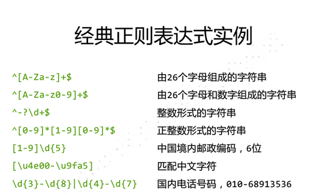
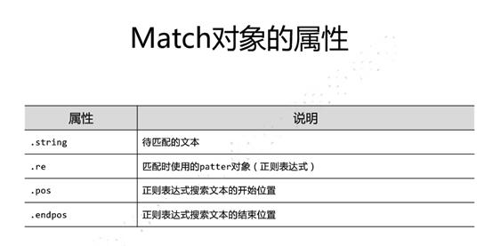
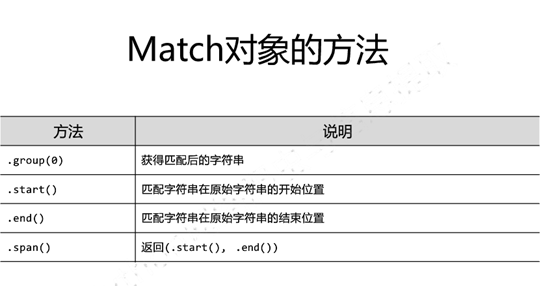
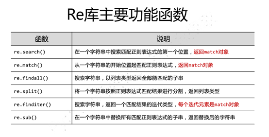
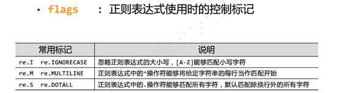
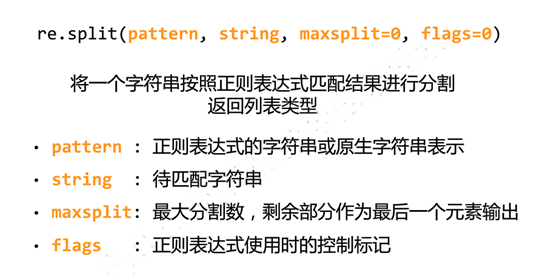
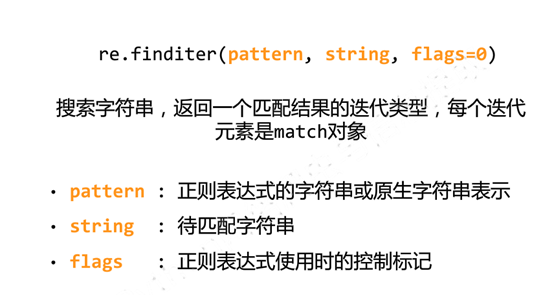
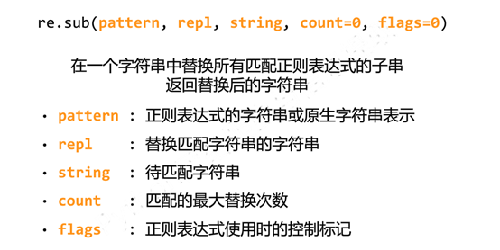
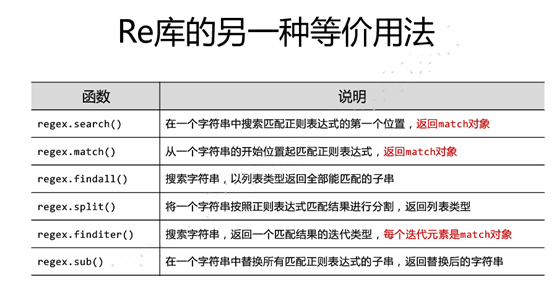

Re查找
基于正则表达式的查找 正则表达式就是将r.textl里面的部分内容，或全部内容进行查找，摘出相应的字符串，所以正则表达式查找，输入和输出都是字符串 正则表达式的语法 正则表达式分为两种一种是r”(原生字符表达式)，还有一种string类型

正则表达式的使用方式 Match对象 Match是一次匹配的结果里面包含很多信息（和requestsli里面返回的Sponse对象一样，包含了很多信息）


Re库的主要功能函数

Re.search(pattern,string,flags=0) 返回match对象 Pattern是正则表达式的字符串或者是·原生字符。 String是待匹配的字符串 Flags是正则表达式使用时候的控制标记




re库的一种等价用法

最小匹配

返回的有match类型和string类型和列表类型
Re正则
| \w | ||
|---|---|---|
| \W | ||
| \s | ||
| \S | ||
| \G | ||
| \d | ||
| \D | ||
| \a | ||
| \n | ||
| \t | ||
| ^ | ||
| $ | ||
| . | ||
| […] | ||
| … | ||
| * | ||
| + | ||
| ? | ||
| { } | ||
| { } | ||
| a\ | b | |
| () |
上面是常见的正则匹配规则，然后python对正则有个模块，现在来介绍这个模块的方法与属性
import re
其中pattern 是匹配规则，string是待匹配字符串，flag是匹配信号
math()。
re.match(pattern, string, flags=0)，获取到的是一个匹配对象Match对象。其中Match有哪些属性？Match.group(1)获取到匹配的一个结果。Match.groupdict()以字典的形式返回匹配的第一个字符与最后一个字符。Match.start()以返货匹配的第一个字符的下标，和最后一个字符的下标
search()。
与match（）基本一样唯一不同的是match不是匹配开头。
finditer()
finditer(*pattern*, *string*, *flags=0*)
与findall()差不多，但获取到的是Matchs
findall()
findall(*pattern*, *string*, *flags=0*)
```获取到的是可匹配的字符列表
## sub()
sub(pattern, repl, string, count=0, flags=0)*
## split()
split(pattern, string, maxsplit=0,* flags=0)